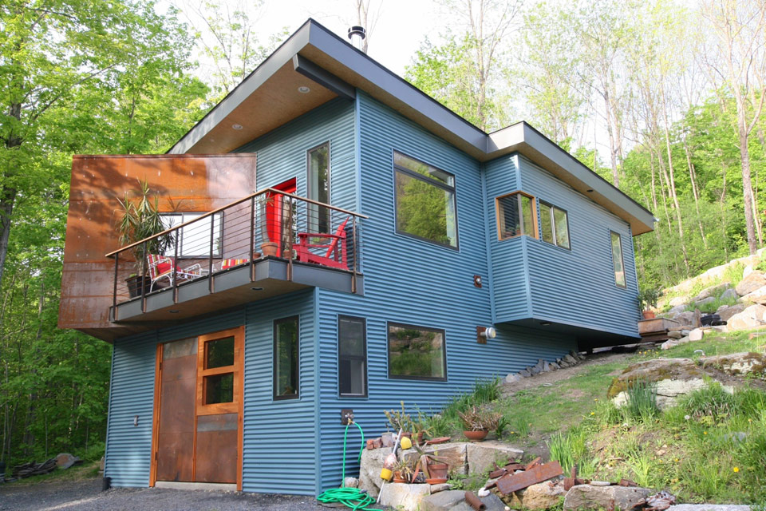
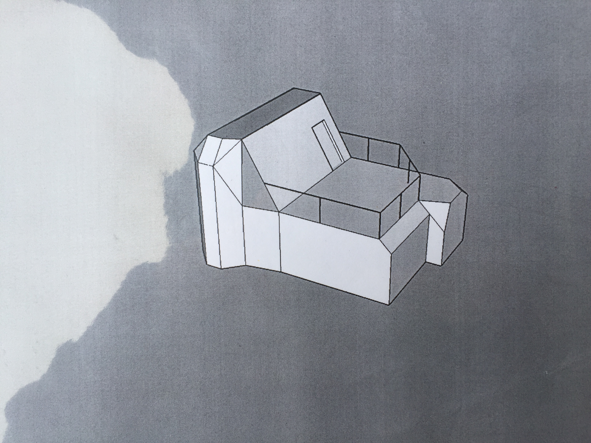
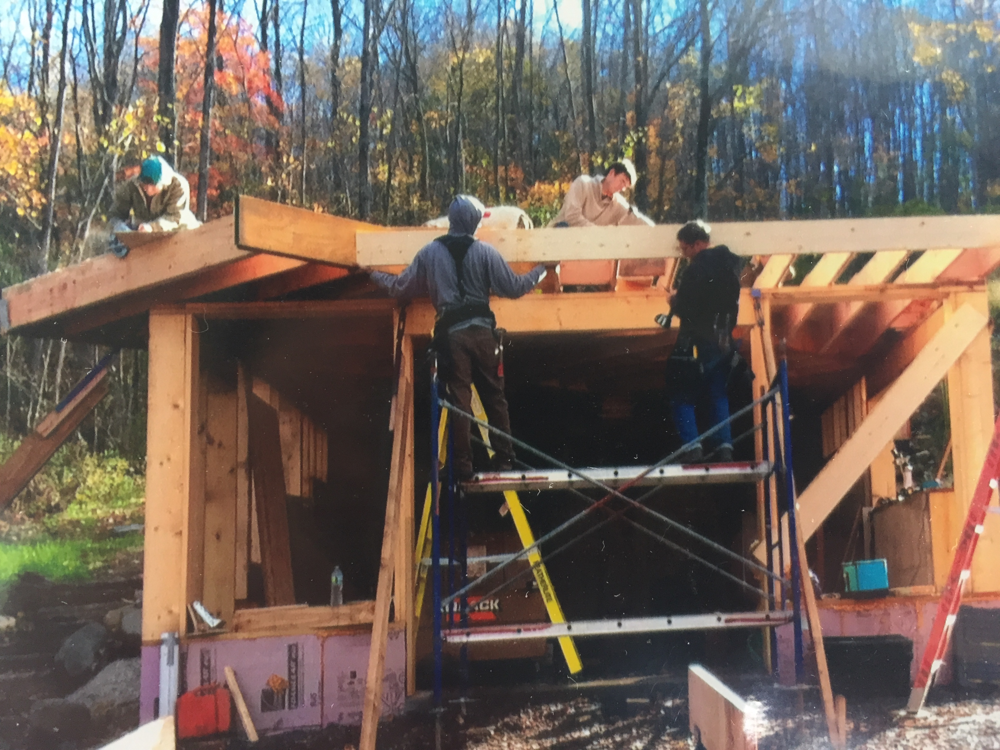
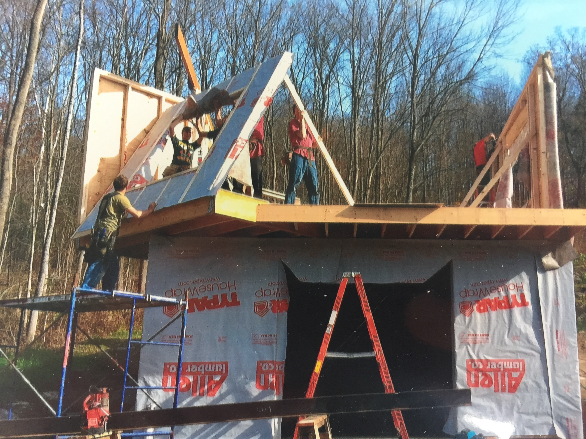
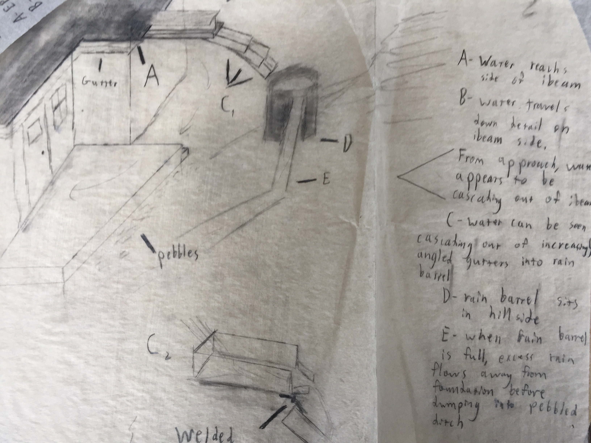
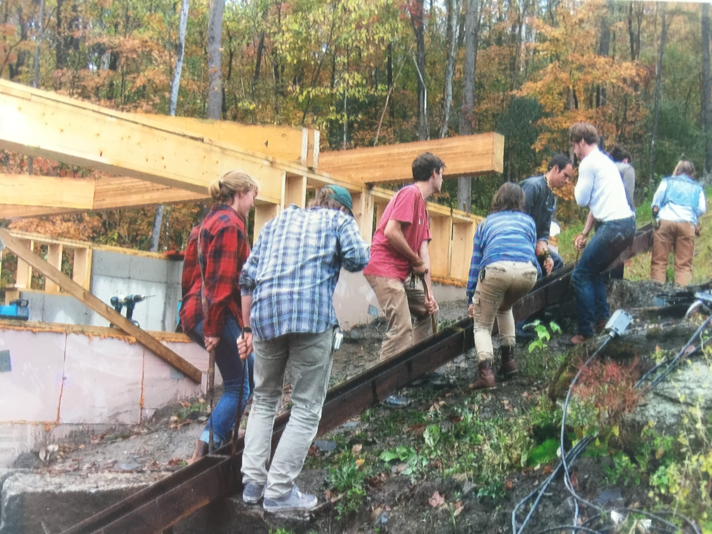
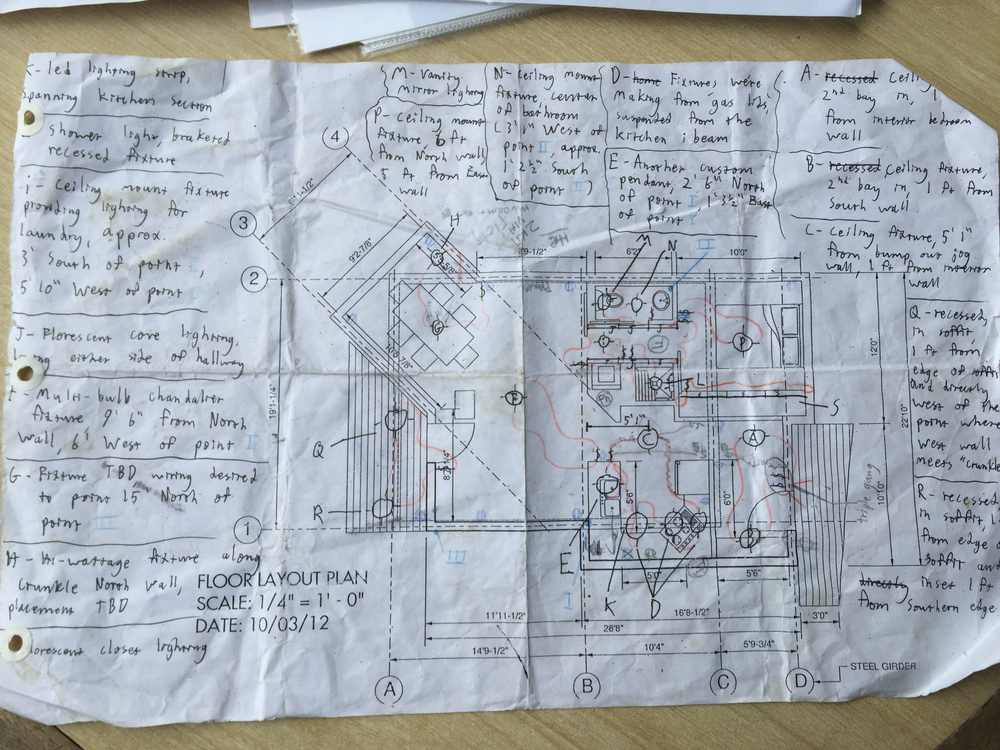
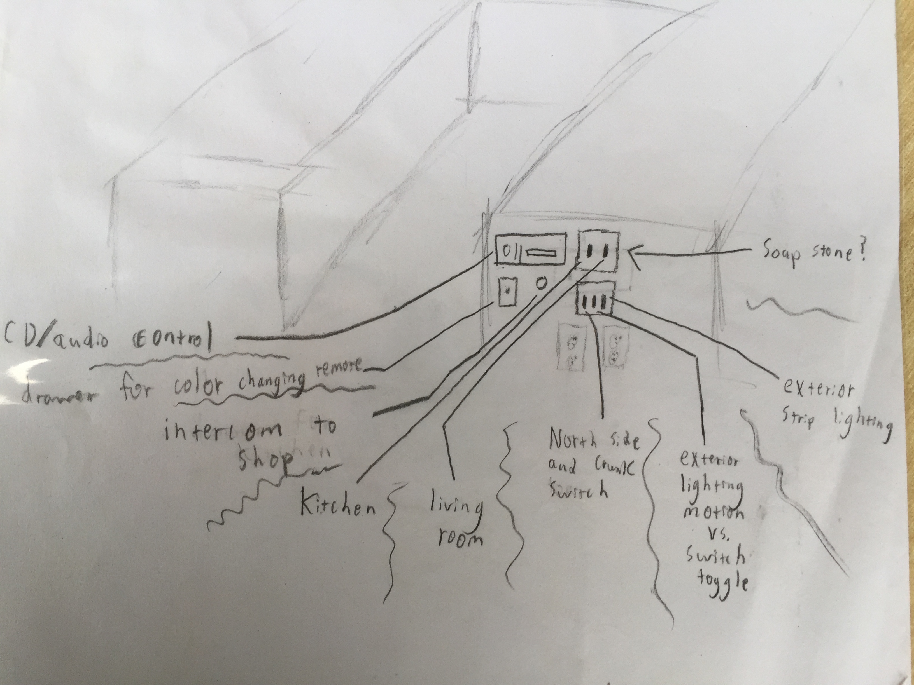

Krunkle House
Designing and building a small house
I spent the fall semester of my Junior year in Vermont, designing and building this small house.
The house was created with five other students and three instructors through the Yestermorrow Design/Build semester program. Our instructors included the world's foremost expert on handicap accessible treehouses, a professional architect, and a professional wood worker. The other students came from architecture, business, and engineering backgrounds.
We started by studying the history of Vermont's improvisational architecture movement. We learned how to draw by hand, and visited famous improvised buildings (like the Dimetrodon, pictured below left). Then we got comfortable with saws, measuring tapes, and joinery. Each of us created a piece of furniture.
When we first arrived at our construction site, the foundation had already been laid. Creating a foundation often takes half of the build timeline!

We met with our client and learned about their needs. The client wanted a tiny house that felt spacious, and all of the creativity that a diverse group of students could bring to bear.
We started by massing and prototyping ideas in a variety of different mediums. We worked on paper, in 3D modeling software, and with physical prototypes. We iterated, debated, and papered our studio with ideas.
My favorite lesson-learned from the process was on effectively communicating designs.
One week, each student was tasked with proposing a floorplan for the house. My architectural and engineering classmates created beautifully drawn floorplans. Although I did my best, my floorplan looked very unprofessional in comparison. At first, I felt like I had failed the exercise.
But my concept was simple, and easy to communicate. I wanted the angle of a cantilevered volume to guide the floorplan, by expressing itself throughout the house. This angle would direct the inhabitant's attention towards the best veiw.
When we presented to our client, I was able to speak passionately and effectively about the intended experience. We ultimately decided on my floorplan.
I learned that the point of creating a design artifact is often to effectively communicate an idea. Sometimes, a high fidelity artifact isn't necessary.
I also learned how awesome it feels to collaboratively create things with a group of skilled professionals. Although my idea was cool, it would have meant nothing without the skillsets of my classmates and instuctors. By bringing our different skills to bear, we all got to see our collective vision manifest itself.
 We built the floor and walls, and collaborated with some contractors on the roof.
On class field trips, we learned how to source materials from lumber mills and steel yards. We found a great bargain on a couple I-beams.
We used a combination of wooden LVLs (more practical) and I-beams (more fun) to support our house's various cantilevers. Our engineering student figured out how to safetly put a "thermal block" in the I-beam, so that it wouldn't conduct cool air into the house. I did some research on the relevant building codes, and we met with an inspector.
We wanted the I-beams to express themselves both inside and outside, so we created a funky design where an I-beam would run through the kitchen, and then out onto the porch. I played around with the idea of using the I-beam as part of a gutter system.
 We experienced firsthand that a building's structure goes up pretty quickly. Most of the work happens after all of the wood (joists and studs) are already in place.
Sheathing the walls, installing windows, and putting up drywall was a lot of hard work. Once the drywall was up, we coordinated with a subcontractor who installed densepack insulation.
Each of the students contributed a special element to the building.
I created a lighting plan, and then worked with an electrician to wire the house. I also prototyped a few custom lighting fixtures. The prototypes were used as inspiration for some custom lighting fixtures which our client later commissioned from someone else.
 At the end of our semester, the exterior of the house was finished. The next Spring, a group of students from Yestermorrow's cabinet making class finished up the kitchen, and our client moved in.